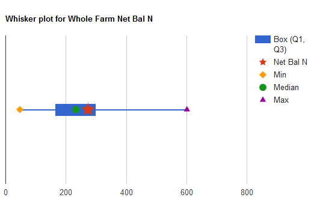
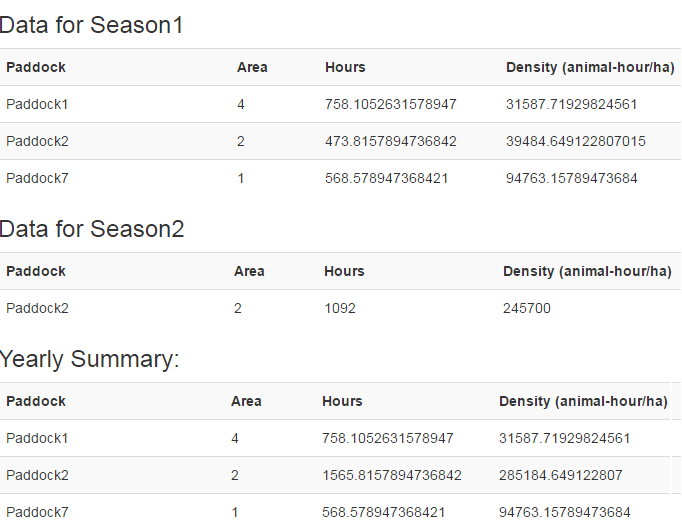

Map Print Service
A Map Print Service has been added to allow you to print your output from the FarmBuild Web Mapping module by returning a PDF file via an API. Using a simple printing preferences window, challenges to print high resolution maps from the Web Mapping module are overcome. Now available on GitHub.

Screenshot of the Map Print Service printing preferences that will return a PDF.
Nutrient Benchmarking Whisker Charts
Benchmarking Whisker Charts have been added to the Dairy Nutrient Calculator. Benchmarking parameters estimated from 60 sets of farm data have been hard coded into the version available on GitHub.

Example of the benchmarking whisker charts now available as part of the Dairy Nutrient Calculator.
Dairy Animal Density Calculator
The Dairy Animal Density Calculator is now available to support the mapping and monitoring of cows/animals across a farm according to animal-hour, paddock area and number of animals. Provided as a generic open source model, this new function can be integrated with a range of applications including nutrient and grazing models. Now available on GitHub.

Screenshot showing example output using the Animal Density Mapping function now available.